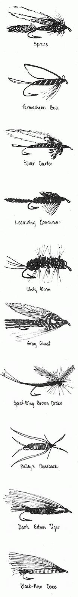
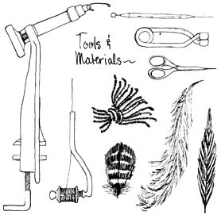
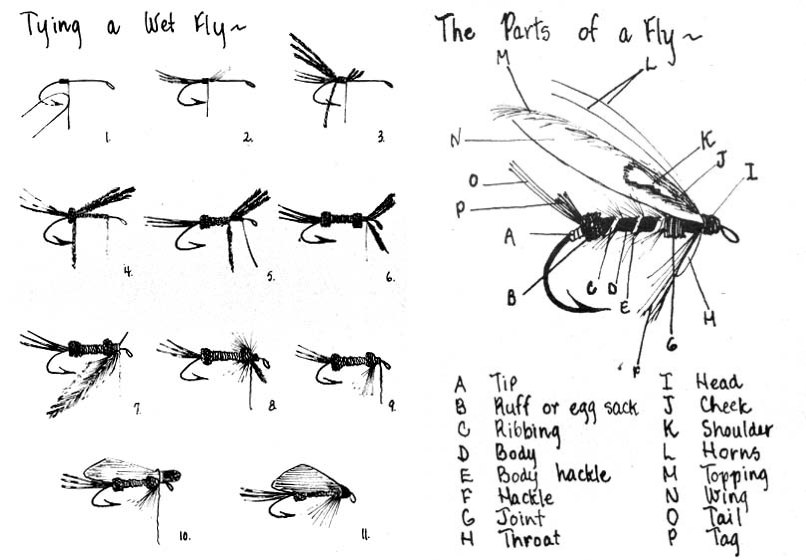

I first learned to tie flies when I was a boy of 13. After watching a man up the street create beauties with such magical names as Parmachene Belle, Silver Doctor, Cowdung, Rio Grande King, March Brown and Black Ghost, I couldn't wait to make my own attempt at this old craft. Every Sunday afternoon for several weeks I carefully observed by mentor in action, then finally took the plunge and invested $5.00 in a fly-tying kit.
The quality of those original supplies was poor, but I didn't care . . . I only wanted to get my hands on the fur, bright feathers and glittering tinsels and combine them into enticements for trout and salmon. When I wasn't actually in the process of tying a fly or fishing, I would often sit mesmerized just admiring the raw materials: raffia grass from Africa, silver and gold tinsels from France, rabbit skins and glossy rooster plumage, to name a few.
My initial efforts were very sloppily executed, but the fish didn't seem to notice. With just a little practice I was soon able to make a few of the simpler trout baits quite proficiently (and to sell them to local fishermen).
At present I tie flies only for myself and for friends who go trout and salmon fishing here in Maine but, in the near future, I plan to start selling my creations once again to earn some extra money. It's an absorbing and profitable craft at which you might like to try your hand.
Fly-tying is basically a method of securing various materials such as furs feathers and tinsels to a fishhook. The resulting fly may or may not imitate an aquatic creature which fish feed upon: A Royal Coachman doesn't look like anything you'll ever see swimming in the water, whereas Roche's Dragonfly does . . . and they both catch fish.
Although a hand-tied fly looks like a complicated creation, it's actually put together in an orderly, step-by-step process that can be mastered by anyone able to form a knot in a piece of thread. You needn't even be a flyfisherman, though it certainly helps.
The best fly-tier I know-and one of the most outstanding in the United States-is Lou Stanford of New Haven, Connecticut. Lou is a massive, 300-pound construction worker with fingers as thick as the pipes he welds on the job . . . but he can produce the most delicate, aesthetically pleasing baits any fisherman could hope to own.
The best way to learn to tie flies is to have a master of the craft teach you. Such people flourish wherever trout or salmon are caught, and can be found even in cities like Chicago, San Francisco and New York . . . so ask around and you'll find someone to start you off. If you live near West Forks, Maine, stop in and see me. I'll be glad to give you some lessons.
If you can't find an instructor, the other possibility is to get a manual and follow the directions. In fact-though I can hardly recommend the use of a book alone-you'll need such a guide even when you have someone to help you.
A few of the texts I use include: Professional Fly-Tying, Spinning and Tackle-Making Manual and Manufacturer's Guide by George Herter, available from Herter's, Inc., Route 2, Interstate 90, Mitchell, South Dakota 57301 (regular edition $2.97, deluxe edition $3.97). This guide is very complete, even a little overdone. The condensed version (98 cents) is more to the point and less confusing for the beginner. Flies by J. Edson Leonard, published by A.S. Barnes, New York ($8.95). A complete manual with a list of 2,200 patterns. Noll Guide to Trout Flies and How to Tie Them, published by Davis-Delaney-Arrow, Inc., New York, and available at most chain stores or from H.J. Noll, Inc., P.O. Box 308, Plumsteadville, Pennsylvania 18949 ($3.50 postpaid). Beautiful color plates of flies and materials, but not very much how-to information. Nevertheless, because of the illustrations and the low price, every fly-tier should have a copy.
Here are the basic supplies you'll need when you begin to practice your new craft:
VISE. Not the heavy workshop variety but a most handy tool that clamps securely to a table and holds a hook firmly in place while a fly is being formed around it. Buy the best you can find . . . the Thompson vise is of excellent quality.
SCISSORS. Purchase two pair of good steel scissors that taper to a fine point. One should be very small and the other have blades about 3-1/2" long.
DUBBING NEEDLE. This small tool is used for numerous precision jobs such as removing cement from the eye of a hook or releasing feathers that may have been tied down by mistake. You might try a hatpin, or make a substitute by embedding a needle in a wooden dowel.
BOBBIN. A little gadget that conveniently holds down your tying silk as you work on a fly. Some craftsmen don't use a bobbin, but it might make matters a bit easier for a beginner.
HACKLE PLIERS are a type of small, spring-action forceps which are used to turn hackle feathers around a hook. Not all fly-tiers use this tool but the majority who do wouldn't be without it.
FLY-TYING CEMENT comes in small jars and helps hold bits of material together.
FLY-TYING WAX. Unless your tying silk is prewaxed, you should coat it with this substance to add strength and adhesion.
ASSORTED FEATHERS, FURS, SILKS, TINSELS AND HOOKS. Caution: never purchase any feather or fur which comes from an endangered species, even though such materials may be for sale. Unfortunately, many fly patterns call for supplies like condor quills and polar bear hair and other substances which are now definitely "off limits" . . . you'll see what I mean when you look through the catalogs. Although it's currently illegal to sell many of these products, some may still be offered, and I urge you to be very careful when making purchases. Always use substitutes if buying the real thing may jeopardize the future of a species.
The largest mail-order supplier of fly-tying equipment is-once again-Herter's. Their prices are low and the quality of their material is about average. (You should also know that Herter's was recently fined for importing feathers from nearly extinct birds.-MOTHER.) Request a catalog, and-if you can find a fly-tier to get you started-have him or her help you put in an order.
Herter's will supply you with a complete kit which includes manual, tools, materials, hooks . . . in fact, everything you need to tie a lot of flies (over 1,000, the company claims, if you order one of its $17.00 packages). Get their Model 9 vise-which comes in most of Herter's kits-and buy a bobbin separately if one isn't included.
Try to avoid purchasing material in small quantities from retail fishing tackle stores . . . often the quality is poor and the prices high. Don't buy a cheap kit, either: Such an inferior package deal usually contains a clumsy (and therefore worthless) vise.
No matter how you choose to purchase your supplies, the initial investment-the price of finding out whether fly-tying will be profitable for you-should be under $20.00. Compared to other crafts, the cost of getting started is extremely low.
Make every effort to use recycled materials. A furrier will probably give you all the fur scraps you can possibly use in a thousand years and the rooster, duck or goose feathers called for in many patterns may be available from fowl you've slaughtered on your own homestead. You might experiment with fibers from reeds found growing locally. Broken rubber bands make excellent bodies for certain flies, old tinfoil can be useful and even the red strip of cellophane from some cigarette packs may come in handy.
Once you start tying, in fact, everything-even living creatures-seems to become a potential source of material for your craft. A snip or two of hair from your cat or dog is most useful and will hardly be missed by the pet, but you may have to chase your lady around the barn to get one of her curly locks to complete a fly that just has to be tied.
As a learner you'll be tying the most simple patterns, but in a very short period your skill will progress to the point at which you'll be able to construct practically all the known flies. You'll probably start creating your own varieties, too, but I'd advise you to master the traditional designs first because fishermen usually prefer to buy flies that have established a name for themselves over the years.
Although the great majority of these lures are tied for the purpose of catching trout and salmon, some patterns are used almost exclusively for bass. Saltwater fishermen, too, have favorites of their own. Inquire locally to find out what flies sportsmen are using in your waters.
Some fishermen, of course, tie their own flies, but many don't . . . they don't want to take the time, or just don't feel competent to do the job, or believe that a device they purchase is better at catching fish than one they could make themselves. At any rate, you should be able to locate buyers for your products without much trouble.
To find a market, go to a sporting goods store or other business that sells fishing tackle and study the workmanship and prices of the flies offered for sale. You'll probably find cheap Japanese import monstrosities at 20 cents each, some finely tied works of art that sell for $1.00 . . . and other lures that fall somewhere in between.
When you have an idea of the going rates, approach the shop's proprietor and ask him if he'd be interested in b uying flies from you outright...or you might work out a consignment arrangement with him. You may wish to package your work attractively for sale through the store, or you may leave the flies loose in small containers. (I've even wrapped my products in cellophane envelopes and stapled the packets to a piece of cardboard, which then placed in a restaurant frequented by fishermen.)
Instead of dealing with a business, some craftsmen hang up signs and sell their products direct from home. You might even try showing samples at sportsmen's meeting places such as boat rental docks and landings. Then if the flies you tie are beautifully handcrafted-as they should be--you'll probably get some custom orders from fishermen who want favorite patterns tied to their own particular specifications. You might also place ads for custom work in Outdoor Life, Sports Afield, Field and Stream or Fly Fisherman.
Another selling possibility is to prepare custom-tied flies for decorative purposes. You can make tiepins of the lures, for instance, or embed them in clear molded plastic for tie clasps, cuff links, paperweights or whatever. You can also create handsome wall plaques (by mounting 12 different landlocked salmon flies in an interesting pattern, to cite just one example). Fine stores such as Orvis, in Vermont, or Abercrombie and Fitch-in New York, Ver mont and other locations-might be interested in carrying these ornaments . . but only if your work is absolutely top quality.
Depending on the pattern, a fly will take you anywhere from three to ten minutes to tie once you become fairly proficient. The cost of the supplies that go into its making will vary from a penny (the cost of the hook plus free recycled materials) to 15 cents (if you use store-bought goods like floss silk and chenille). Naturally you'll keep these facts in mind when you set your prices.
The quality of your work, however, is the most important factor in determining what you can charge. Fine craftsmanship commands a high price, and fishermen will pay you a fair for good products . . . say 50 cents for a very simple pattern and well $1.00 for an exotic salmon fly. Experience will soon teach you how much to ask.
If you maintain a high standard and sell only perfect flies, you'll find that your creations attract not just trout and salmon, but customers! . . . and what began as an absorbing pasttime may turn out to be a very plea way of picking up a few extra do in your spare time. Good luck, and I hope you enjoy fly-tying as much have over the years.
|
 |
 |
 |